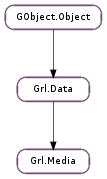

| Subclasses: | Grl.MediaAudio, Grl.MediaBox, Grl.MediaImage, Grl.MediaVideo |
|---|
None
None
Bases: Grl.Data
| Returns: | a newly-allocated data media. |
|---|---|
| Return type: | Grl.Media |
Creates a new data media object.
| Parameters: | serial (str) – a serialized media |
|---|---|
| Returns: | the Grl.Media from the serial |
| Return type: | Grl.Media |
Unserializes a Grl.Media.
| Parameters: | author (str) – an author for media |
|---|
Adds a new author to media.
| Parameters: | player (str) – an external player for media |
|---|
Adds a new external player to media.
| Parameters: | url (str) – an external url for media |
|---|
Adds a new external url to media.
| Parameters: | keyword (str) – a keyword describing the media |
|---|
Adds the keyword describing the media.
| Parameters: |
|
|---|
Adds regional publication and certification information for region.
| Parameters: | thumbnail (str) – a thumbnail for media |
|---|
Adds a new thumbnail to media.
| Parameters: |
|---|
Adds a new thumbnail to media.
| Parameters: |
|---|
Adds a new media’s URL with its mime-type.
| Returns: | the media’s author |
|---|---|
| Return type: | str |
| Returns: | the media’s age certification |
|---|---|
| Return type: | str |
Returns the media’s first age certificate. This should usually be the media’s most relevant age certificate. Use Grl.Media.get_region_data_nth () to get other age certificates.
| Returns: | date when media was created (owned by media ). |
|---|---|
| Return type: | GLib.DateTime |
| Returns: | URL of an external location where the user play the media. |
|---|---|
| Return type: | str |
| Parameters: | index (int) – element to retrieve |
|---|---|
| Returns: | the n-th media’s external location where the user can play it. |
| Return type: | str |
| Parameters: | index (int) – element to retrieve |
|---|---|
| Returns: | the keyword describing the media (owned by media ). |
| Return type: | str |
| Returns: | date when the media was last modified (owned by media ). |
|---|---|
| Return type: | GLib.DateTime |
| Parameters: | index (int) – element to retrieve |
|---|---|
| Returns: | the n-th media’s external player object. |
| Return type: | str |
| Returns: | the publication date of media (owned by media ). |
|---|---|
| Return type: | GLib.DateTime |
| Returns: | the media’s rating |
|---|---|
| Return type: | float |
| Returns: | the ISO-3166-1 of the region where the media was published (owned by media ). |
|---|---|
| Return type: | str |
| Returns: | the ISO-3166-1 of the region where the media was published (owned by media ). |
|---|---|
| Return type: | str, publication_date: GLib.DateTime, certificate: str |
Returns the media’s age certificate and publication date for the first region. This should usually be the media’s most relevant region. Use Grl.Media.get_region_data_nth () to get the age certificate and publication date for other regions.
| Parameters: | index (int) – element to retrieve |
|---|---|
| Returns: | the ISO-3166-1 of the region where the media was published (owned by media ). |
| Return type: | str, publication_date: GLib.DateTime, certificate: str |
Returns the media’s age certificate and publication date for one region. Use Grl.Data.length () with Grl.METADATA_KEY_REGION to discover how many regions are available. For instance:
guint count = grl_data_length (GRL_DATA (media), GRL_METADATA_KEY_REGION);
guint i;
for (i = 0; i < count; ++i) {
const GDateTime* publication_date = NULL;
const gchar* certificate = NULL;
const gchar* region =
grl_media_get_region_data_nth (media, i,
&publication_date, &certificate);
...
}
| Returns: | the start time of the logical media resource inside the file containing it, in seconds. |
|---|---|
| Return type: | float |
| Parameters: | size (int) – pointer to storing the thumbnail buffer size |
|---|---|
| Returns: | the media’s thumbnail data and set size to the thumbnail buffer size |
| Return type: | int |
| Parameters: | |
|---|---|
| Returns: | the n-th media’s thumbnail binary and sets size to the thumbnail buffer size. |
| Return type: |
| Parameters: | index (int) – element to retrieve |
|---|---|
| Returns: | the n-th media’s thumbnail. |
| Return type: | str |
| Parameters: | index (int) – element to retrieve |
|---|---|
| Returns: | the n-th media’s URL and its mime-type. |
| Return type: | str, mime: str |
| Returns: | serialized media |
|---|---|
| Return type: | str |
Serializes a Grl.Media into a string. It does a basic serialization.
See Grl.Media.serialize_extended () to get more serialization approaches.
| Parameters: | author (str) – the media’s author |
|---|
Set the media’s author
| Parameters: | certificate (str) – The age certificate of the media |
|---|
Set the media’s first age certification. This should usually be the media’s most relevant age certificate. Use Grl.Media.set_region_data () to set other age certificates.
| Parameters: | creation_date (GLib.DateTime) – date when media was created |
|---|
Set the creation_date of the media
| Parameters: | description (str) – the description |
|---|
Set the media’s description
| Parameters: | player (str) – location of an external player for this media |
|---|
Set the location of a player for the media (usually a flash player)
| Parameters: | url (str) – external location where this media can be played. |
|---|
Set an external location where users can play the media
| Parameters: | favourite (bool) – whether the item is favourite or not |
|---|
Set if the media is favourite or not
| Parameters: | keyword (str) – a keyword describing the media |
|---|
Sets the keyword describing the media.
| Parameters: | last_played (str) – date when the media was last played |
|---|
Set the media last played date
| Parameters: | last_position (int) – second at which the media playback was interrupted |
|---|
Set the media last played position
| Parameters: | modification_date (GLib.DateTime) – date when the media was last modified |
|---|
Set the modification date of the media
| Parameters: | date (GLib.DateTime) – the date |
|---|
Set the publication date of media.
| Parameters: |
|
|---|
This method receives a rating and its scale and normalizes it on a scale from 0...5 to match the usual five-star rating.
| Parameters: | region (str) – the region’s ISO-3166-1 code |
|---|
Sets the region where media was published.
| Parameters: |
|
|---|
Sets regional publication and certification information for region.
| Parameters: | site (str) – the site |
|---|
Set the media’s site. A site is a website about the media such as a studio’s promotional website for a movie.
| Parameters: | thumbnail (str) – the thumbnail URL |
|---|
Set the media’s thumbnail URL
| Parameters: |
|---|
Set the media’s binary thumbnail